Who She Is Download Resume
Dr. P. Nirmala Devi is a Senior Domain Expert (Siddha) and Siddha physician at Siddha Chikitsa Kendra OPD, affiliated with Shri Krishna AYUSH University. She combines decades of tradition[...]
Her approach is rooted in compassionate care, holistic diagnosis, and natural healing principles. Dr. Nirmala Devi is widely respected for her expertise in herbal formulations, pulse diag[...]
About Siddha
Siddha is one of the oldest traditional systems of medicine originating in South India. It focuses on balancing the body's three vital humors—Vatham, Pitham, and Kabam—and uses herbal[...]
Siddha emphasizes prevention, rejuvenation, and the use of time-tested remedies derived from plants, minerals, and natural resources. It is recognized for its deep understanding of body c[...]
SIDDHA BASIC CONCEPTS
तन को पालो
जीवन को पालो
भोजन ही औषध
औषध ही भोजन
Nourish the body, nourish life.
Food itself is medicine; medicine itself is food.
These are fundamental principles often emphasized in Siddha and traditional Indian healing systems, highlighting preventive healthcare through proper diet and lifestyle.
Types of Siddha Medicines
- Mooligai – Herbal medicines derived from plants and herbs.
- Thathu – Mineral-based medicines.
- Ulogam – Metal-based medicines processed according to Siddha principles.
- Jeevam – Medicines derived from animal sources.
- Polyherbal Formulations – Preparations containing a combination of multiple medicinal herbs.
Siddha System of Medicine
The Ancient Science of Holistic Health and Longevity
Origin of Siddha System
The Siddha System of Medicine is one of the world's oldest traditional healing sciences, originating in the ancient Tamil civilization. Rooted in thousands of years of wisdom, Siddha repr[...]
According to traditional Siddha literature, the system traces its origins to the ancient Dravidian civilization and has served humanity continuously for millennia. The Siddha tradition ev[...]
The uniqueness of Siddha lies in its holistic approach to preserving physical, mental, emotional, and spiritual well-being while preventing disease and promoting longevity.
The Siddhars: Masters of Wisdom and Healing
The Siddhars were extraordinary scholars, mystics, yogis, physicians, philosophers, poets, and scientists who made invaluable contributions to human civilization.
They devoted themselves to understanding:
- Human physiology and health
- Herbal and mineral medicines
- Yoga and meditation
- Alchemy and rejuvenation sciences
- Astronomy and astrology
- Philosophy and spirituality
- Varma and therapeutic healing techniques
The Siddhars emphasized direct experience, observation, and experimentation. Their teachings continue to influence traditional healthcare systems and holistic wellness practices across ge[...]
Core Contributions of the Siddhars
- Development of Siddha Medicine
- Advancement of Yogic Sciences
- Discovery of Varma Therapy
- Research in Kayakalpa Rejuvenation
- Development of Alchemical Medicines
- Promotion of Preventive Healthcare
- Integration of Spirituality with Healing
Therapeutics of Siddha
The Siddha therapeutic system possesses a rich pharmacopoeia consisting of medicines derived from:
Herbal Sources
Medicinal plants, roots, leaves, flowers, fruits, and seeds.
Mineral Sources
Natural minerals processed using specialized purification methods.
Animal Sources
Traditional preparations derived from naturally available biological substances.
The Siddha system employs a wide range of treatment modalities including:
- Internal Medicines
- External Therapies
- Therapeutic Massage (Thokkanam)
- Varma Therapy
- Yogic Practices
- Dietary Regulation (Pathiyam)
- Lifestyle Modification
- Detoxification Procedures
- Rejuvenation Therapies
Siddha places equal emphasis on prevention and cure, believing that proper diet, disciplined living, and harmony with nature are essential for maintaining health.
Classification of Siddha Medicines
Traditionally, Siddha medicines may be broadly classified into three categories:
1. Superior Medicines
Highly specialized formulations prepared using advanced traditional processes and requiring extensive expertise.
2. Specialized Medicines
Scientifically prepared medicines administered by trained Siddha physicians for various health conditions.
3. Common Medicines
Simple, safe, and accessible remedies traditionally used in households and rural communities for everyday healthcare needs.
This classification reflects the diverse spectrum of Siddha therapeutics, ranging from common remedies to highly sophisticated formulations.
Rajayogam in Siddha
Rajayogam occupies a significant place within Siddha philosophy and practice. It focuses on awakening the latent spiritual potential within every individual.
Through disciplined practice of:
- Yoga Asanas
- Pranayama (Breath Control)
- Meditation
- Self-Discipline
- Ethical Living
the practitioner seeks physical vitality, mental clarity, emotional balance, and spiritual realization.
The Siddhars taught that true healing occurs when the body, mind, and consciousness function in harmony.
Siddha Education and Knowledge Transmission
Traditionally, Siddha knowledge was preserved through the Guru–Shishya (Teacher–Disciple) tradition, where students learned directly from experienced masters.
Knowledge was transmitted through:
- Palm-leaf manuscripts
- Classical Tamil verses
- Clinical practice
- Personal mentorship
- Spiritual discipline
Today, Siddha education has evolved into a structured academic discipline supported by universities, research institutions, and healthcare organizations while preserving its traditional [...]
Kayakalpa: The Science of Rejuvenation
One of the unique contributions of Siddha medicine is Kayakalpa, a specialized branch focused on rejuvenation, healthy aging, vitality enhancement, and longevity.
Kayakalpa practices aim to:
- Improve physical strength
- Enhance immunity
- Promote mental well-being
- Delay signs of aging
- Improve quality of life
- Support healthy longevity
Siddha in the Modern Era
Today, Siddha medicine continues to gain recognition as an important component of integrative healthcare. Ongoing scientific research, clinical studies, and educational initiatives are h[...]
The future of Siddha lies in:
- Evidence-based research
- Integrative healthcare models
- Herbal drug development
- Preventive medicine
- Personalized wellness programs
- Global dissemination of traditional knowledge
Vision Statement
"Preserving Ancient Wisdom, Advancing Scientific Research, and Promoting Holistic Health for Future Generations."
Motto
Heal Naturally • Live Harmoniously • Age Gracefully • Realize Your Highest Potential
Visual Insights from Siddha Practice
These educational posters and scanned charts highlight core Siddha concepts, preventive health guidance, yogic practices, and dietary principles for holistic wellness.


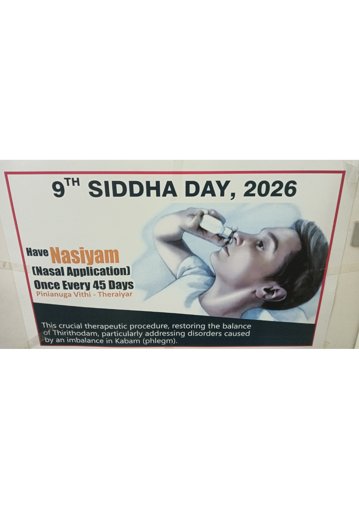


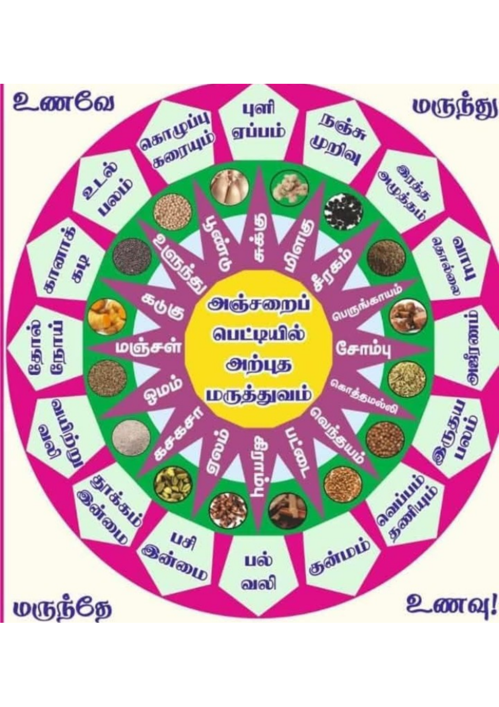
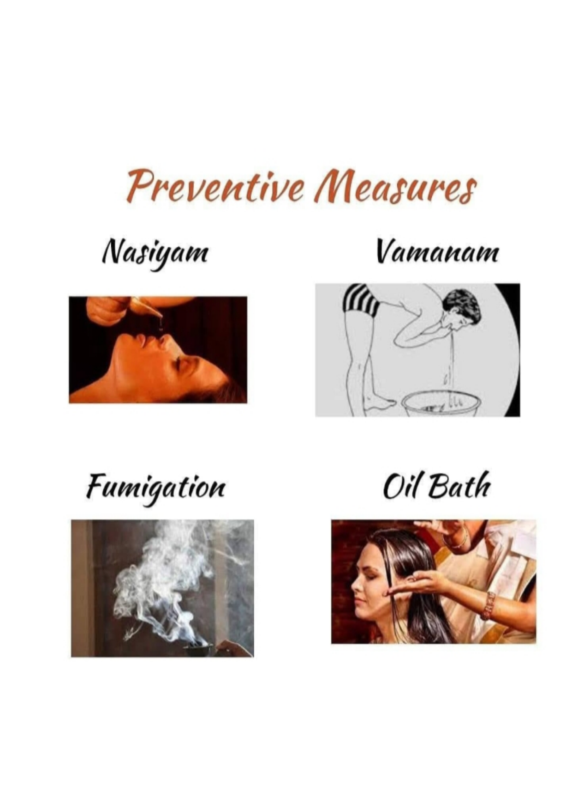
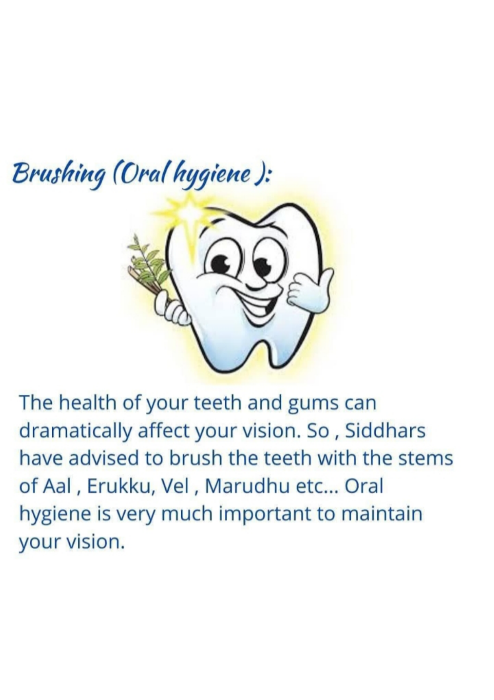
Treatments
Dr. Nirmala Devi offers a full range of Siddha treatments, including:
- Herbal and mineral medicine formulation
- Pulse diagnosis and personalized treatment plans
- Therapeutic oils, steam therapy, and herbal decoctions
- Women's health care and gynecological support
- Skin, respiratory, and musculoskeletal therapies
- Stress management and wellness consultations
Each treatment plan is tailored to the patient's unique constitution and health goals, ensuring compassionate, long-lasting care.
2026 Yearly Report Published
In 2026, Dr. P. Nirmala Devi published her annual Siddha medicine report highlighting clinical outcomes, research insights, and advancements in patient care. The report includes:
- Case studies on chronic condition management
- Updates on Siddha treatment protocols and safety
- Patient wellness and recovery statistics
- Educational outreach and preventive health initiatives
This yearly report reflects Dr. Nirmala Devi's commitment to advancing Siddha medicine and providing trusted care for every patient.


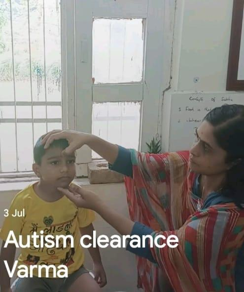
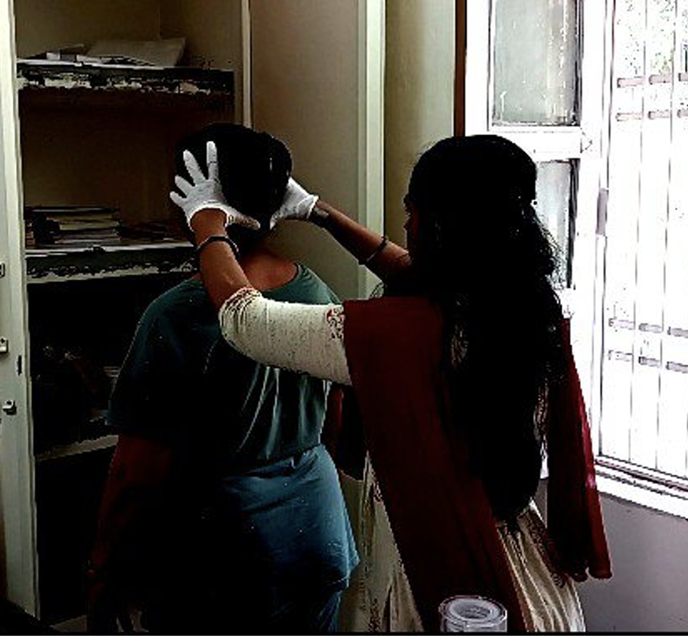
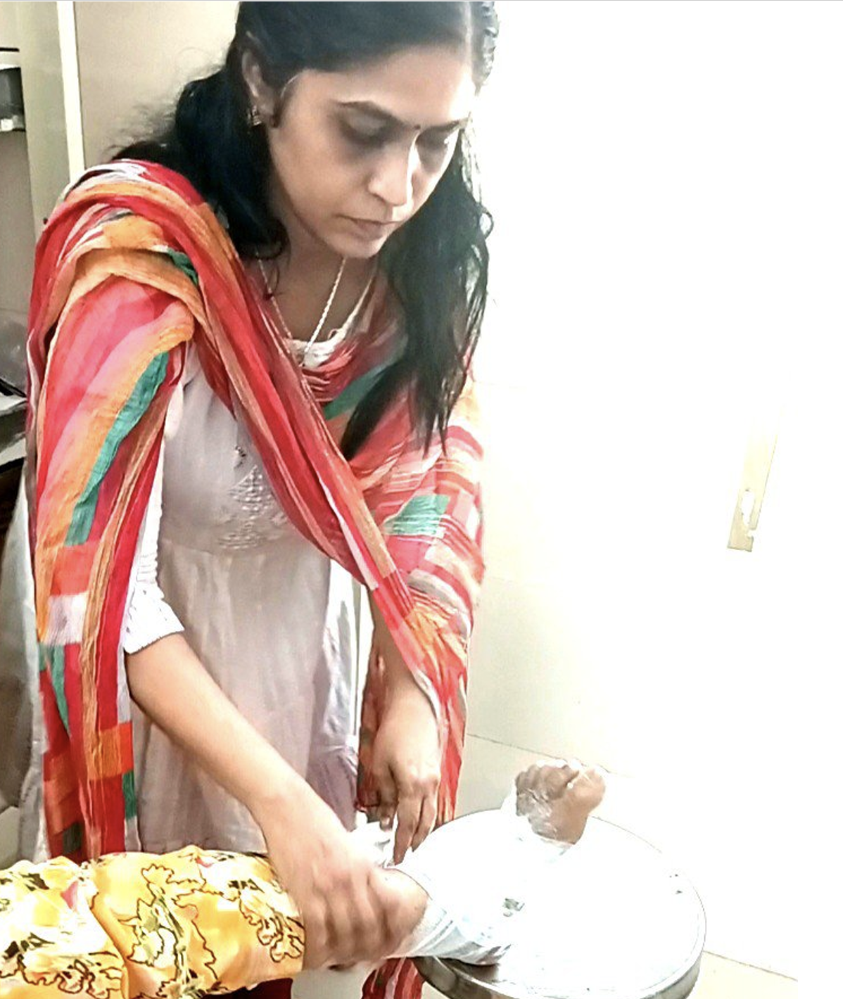
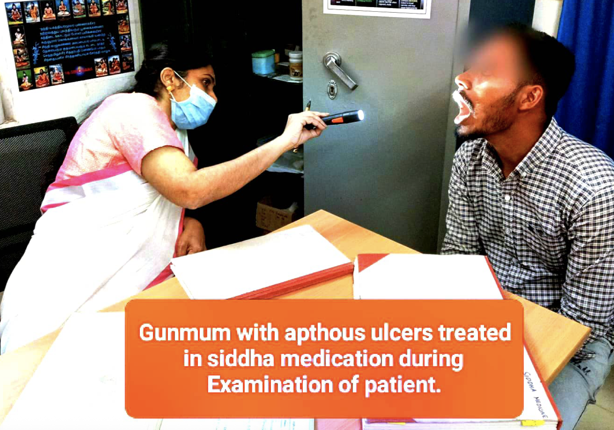
Media Gallery
Browse through selected media from Siddha Chikitsa Kendra, including awareness events, treatment visuals, and clinical documentation.
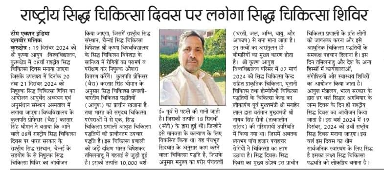
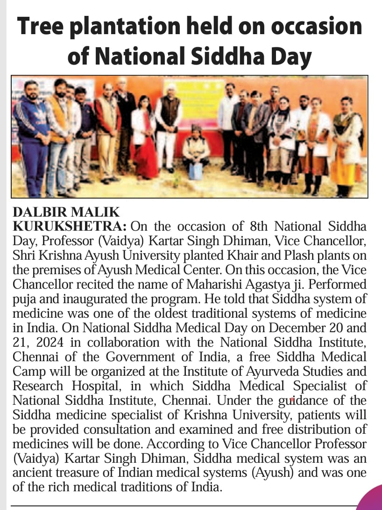
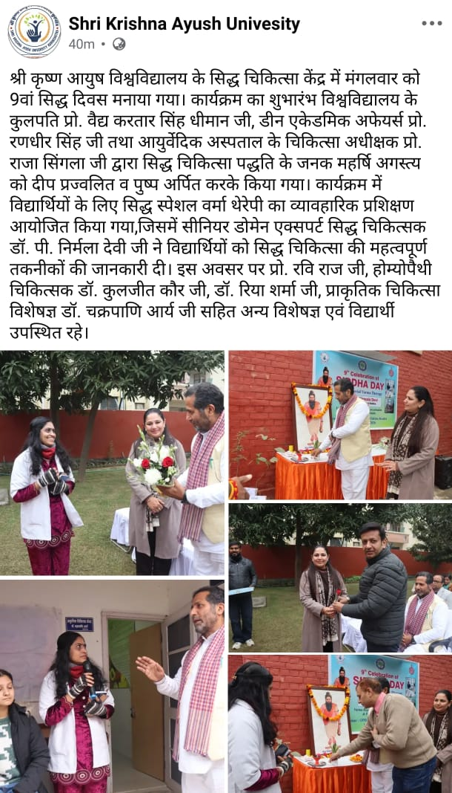
2025 Annual Report Highlights
The Siddha Chikitsa Kendra annual report for 2025 documents clinical service delivery, outreach work, academic mentoring, and the growing impact of traditional Siddha care.
- Provided comprehensive Siddha evaluations, including Naadi pulse examination, lifestyle counseling, diet guidance, and integrated therapeutic care.
- Managed a wide range of conditions such as diabetes, obesity, hypertension, arthritis, asthma, PCOD, insomnia, psoriasis, infertility, chronic sinusitis, thyroid disorders, and pediat[...]
- Conducted free medical camps with screening, awareness pamphlet distribution, Varma therapy, and follow-up care at community sites and schools.
- Supported postgraduate Siddha students with doubt clearance sessions, introduced Siddha awareness to Ayurveda undergraduates, and guided PhD research on Varma and Marma integration.Delivered special clinical interventions for cervical spondylosis with spine Varma activation, eczematous ulcer treatment, and supportive autism management through Varma therapy.
- Led public outreach activities including high school Siddha awareness programs, mango tree plantation for medicinal plant conservation, and preventive healthcare education.
- Maintained consistent OPD services throughout 2025, serving 747 patients over 365 working days with detailed reporting of outpatient care and procedures.
These highlights underline the Kendra’s commitment to combining traditional Siddha wisdom with patient-centered clinical care, education, and community health initiatives.
Contact & Consultation
Book a consultation with Dr. P. Nirmala Devi for Siddha treatment planning, follow-up care, or wellness guidance.
Email:Consultant.siddha@skau.ac.in
Phone:8222956540
Location: Shri Krishna Ayush University,Umri Road, Sector 8,Kurukshetra, Haryana – 136118